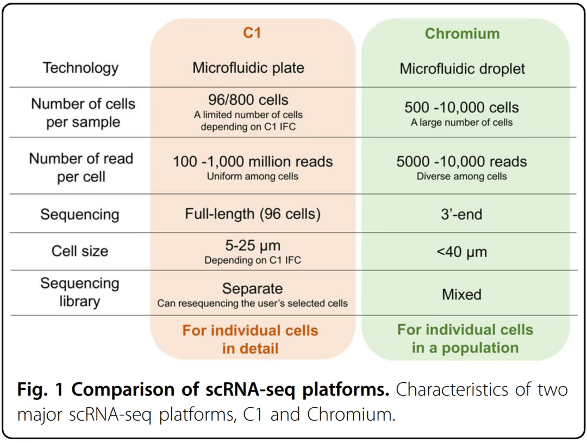

单细胞测序
什么是单细胞测序技术？
技术原理与关键环节
1. 核心原理
- 单细胞分离：将单个细胞从群体中分离，避免混合样本的平均效应。
- 核酸扩增：因单细胞内DNA/RNA含量极低（皮克级），需通过全基因组扩增（WGA）或全转录组扩增（WTA）放大信号。
- 文库构建与测序：将扩增产物转化为测序文库，利用高通量测序平台（如Illumina）获取数据。
- 数据分析：通过生物信息学工具解析基因表达谱、细胞类型分类、功能注释等。
2. 关键技术环节
- 显微操作法：精度高但通量低，适用于少量样本。
- 流式细胞分选：基于荧光标记自动化分选，通量较高但依赖细胞状态。
- 微流控芯片（主流）：利用微通道设计实现高通量、低损伤捕获（如10x Genomics Chromium系统）。
- PCR-based方法：操作简便但存在扩增偏倚。
- MDA（多重置换扩增）：覆盖度较好但一致性差。
- MALBAC（多重退火环状循环扩增）：由谢晓亮团队开发，通过环化引物降低扩增偏倚，覆盖93%的基因组，适用于检测单细胞序列变异。
- 单细胞ATAC-seq：研究染色质开放性。
- 表面蛋白检测：结合Feature Barcode技术（如10x Genomics）或抗体标记（如BioLegend）。
- 空间转录组：如华大Stereo-cell技术，通过DNA纳米球阵列实现原位空间定位。
实验流程
- 样本制备：
- 实体组织需解离为单细胞悬液（酶解或机械研磨），需优化方案以保持细胞活性。
- 样品要求：细胞活率>80%，浓度7×10⁵-1.2×10⁶ cells/mL，直径<40μm。
- 单细胞捕获：
- 使用微流控芯片或微孔板技术（如10x Genomics）捕获单细胞。
- 核酸扩增：
- 通过GemCode技术（10x Genomics）或MALBAC技术扩增DNA/RNA。
- 文库构建与测序：
- 将扩增产物构建为测序文库，结合Illumina等平台进行高通量测序。
- 数据分析：
- 使用工具如Seurat、Scanpy进行聚类、差异基因分析、轨迹推断（如Pseudotime分析）。
- 整合多组学数据（如转录组+ATAC-seq）解析调控网络。
单细胞测序关键技术与方法
单细胞转录组扩增技术：
Smart-seq：一种全转录组扩增（WTA）方法，通过oligo-dT引物和模板转换实现全长cDNA扩增。
Smart-seq2：改进版，提供更稳定和准确的mRNA测量。
Quartz-Seq：通过poly(A)标记实现高灵敏度的转录组扩增。
CEL-seq：基于体外转录的WTA方法。
RamDa-seq：能够检测单细胞中的非poly(A)转录本，包括长非编码RNA和增强子RNA。
微滴技术和微孔技术：
Drop-Seq：基于微滴技术，将单个细胞/核、反应液和条形码珠子封装在油滴中，通过分子/细胞条形码进行逆转录（RT）。
DroNc-seq：类似Drop-Seq，但专门用于单核RNA-seq。
Microwell-seq：基于微孔技术，将单个细胞和条形码珠子隔离在微孔中。
Nx1-seq 和 Seq-Well：便携式、低成本的微孔平台，适用于高通量单细胞分析。
高通量和低成本方法：
sci-RNA-seq：组合索引方法，最新版本为sci-RNA-seq3，适用于大规模单细胞分析。
自动平台：如C1 Single-Cell Auto Prep系统（Fluidigm），可自动完成细胞分离、细胞裂解、RT和PCR扩增。
测序平台：
基于微滴技术：Chromium（10× Genomics）、ddSEQ（Bio-Rad/Illumina）、Nadia（Dolomite）、inDrop（1CellBio）。
基于微孔技术：Rhapsody（BD）、ICELL8（Takara）。

Seurat：一个综合性的R包
数据过滤：去除低质量或不符合标准的细胞和基因。
归一化：调整不同细胞的测序深度，使数据可比。
缩放：对数据进行标准化处理，以便后续分析。
降维：通过主成分分析（PCA）等方法减少数据维度，便于可视化和聚类。
聚类：将具有相似转录组特征的细胞分组。
可视化：生成如t-SNE、UMAP等可视化图表，直观展示细胞群体的分布和差异。
技术局限性
- 低覆盖度与高噪音：
- 单细胞测序因扩增偏差和随机性，导致基因覆盖度低（仅检测部分基因），数据中存在噪音。
- 细胞损失与偏差：
- 分离过程中细胞丢失（捕获效率通常<70%），且不同细胞类型RNA含量差异可能导致信息低估。
- 数据处理复杂：
- 需要复杂的生物信息学工具（如归一化、降维、聚类算法），对计算资源要求高。
- 成本较高：
- 相比传统测序，单细胞测序成本显著增加（如10x Genomics单细胞转录组测序成本约为传统测序的10倍）。
- 数据解读困难：
- 噪音和生物学意义需结合实验验证（如qPCR、FISH）进一步确认。
单细胞测序技术在重症医学领域的应用
1. 重症感染性疾病（如脓毒症、结核性脑膜炎）
- 免疫图谱解析：
通过单细胞测序（如scRNA-seq）可揭示重症感染患者体内免疫细胞（如巨噬细胞、T细胞、NK细胞）的异质性及功能状态。例如，结核性脑膜炎（TBM）研究中发现，脑脊液（CSF）中富集的微胶质样巨噬细胞（高表达TLR2/4/7和补体成分）及GZMK+CD8+效应记忆T细胞通过干扰素信号通路参与炎症反应，为靶向治疗提供了新靶点。 - 病原体-宿主互作：
单细胞技术可追踪病原体感染后宿主细胞的动态响应。例如，流感病毒研究中，单细胞测序揭示了呼吸道上皮细胞中病毒受体表达差异及免疫细胞浸润模式，为抗病毒药物筛选提供依据。
2. 多器官功能障碍综合征（MODS）
- 器官特异性细胞应激：
在急性呼吸窘迫综合征（ARDS）或急性肾损伤（AKI）中，单细胞测序可识别受损组织中特定细胞亚群（如肺泡上皮细胞、肾小管上皮细胞）的基因表达异常。例如，Stereo-cell技术通过空间转录组分析，可定位肺部组织中炎症因子高表达区域，揭示细胞间通讯紊乱机制。 - 微环境动态监测：
结合多模态整合（转录组+蛋白组+空间定位），Stereo-cell技术可实时捕捉器官微环境中细胞状态变化（如凋亡、代谢重编程），为早期干预提供生物标志物。
3. 免疫调节失衡（如脓毒症、自身免疫性重症）
- 免疫细胞功能失调：
脓毒症患者中，单细胞测序可发现单核/巨噬细胞向M2型极化（促炎到抗炎表型转换）及调节性T细胞（Treg）功能耗竭，揭示免疫抑制状态的分子机制。 - 新型生物标志物筛选：
通过分析重症患者外周血单细胞图谱，可识别与预后相关的特异性标志物（如CD70+白血病干细胞在AML治疗中的耐药性标志物），指导个体化治疗。
4. 重症监护中的早期预警与分型
- 动态监测疾病进展：
单细胞测序可纵向追踪重症患者（如ICU危重病例）的细胞状态变化。例如，通过分析连续血样中的免疫细胞亚群比例及基因表达，预测器官衰竭风险或感染复发。 - 精准分型与治疗选择：
在重症肌无力或系统性红斑狼疮等疾病中，单细胞技术可识别不同免疫表型（如Th17/Treg失衡），辅助制定靶向治疗方案（如IL-6或B细胞抑制剂）。
单细胞测序技术在重症医学领域的技术优势
- 高分辨率解析细胞异质性：
传统方法掩盖的稀有细胞亚群（如0.05%的耐药干细胞）可通过单细胞测序精准识别。 - 动态功能状态分析：
技术如Stereo-cell支持原位动态测序，实时捕捉细胞代谢、信号通路激活状态（如炎症因子释放、线粒体功能障碍）。 - 空间信息整合：
通过DNA纳米球芯片（Stereo-cell）实现空间转录组定位，解析器官内细胞的空间分布及邻近细胞间的相互作用（如肿瘤微环境中的免疫排斥区域）。 - 多组学整合：
联合转录组、表观组及蛋白组数据，揭示重症疾病中复杂的调控网络（如表观遗传修饰驱动的基因沉默）。
重症医学领域的典型案例
- 脓毒症免疫失衡研究：
利用scRNA-seq发现脓毒症患者中单核细胞（CD14+）向M2型极化（高表达CD163、CD206），伴随T细胞耗竭（PD-1+、TIM-3+），提示免疫检查点抑制剂可能逆转免疫抑制状态。 - ARDS肺泡上皮修复：
单细胞测序揭示ARDS患者肺泡Ⅱ型上皮细胞（AT2）中SFTPC突变及代谢重编程（糖酵解增强），为促进肺修复的代谢干预提供靶点。 - 重症新冠患者的免疫特征：
研究显示新冠重症患者中单核细胞衍生的炎症性巨噬细胞（CD16+ CD14+）及组织驻留记忆T细胞（TRM）过度激活，导致细胞因子风暴，指导抗IL-6或JAK抑制剂的使用。